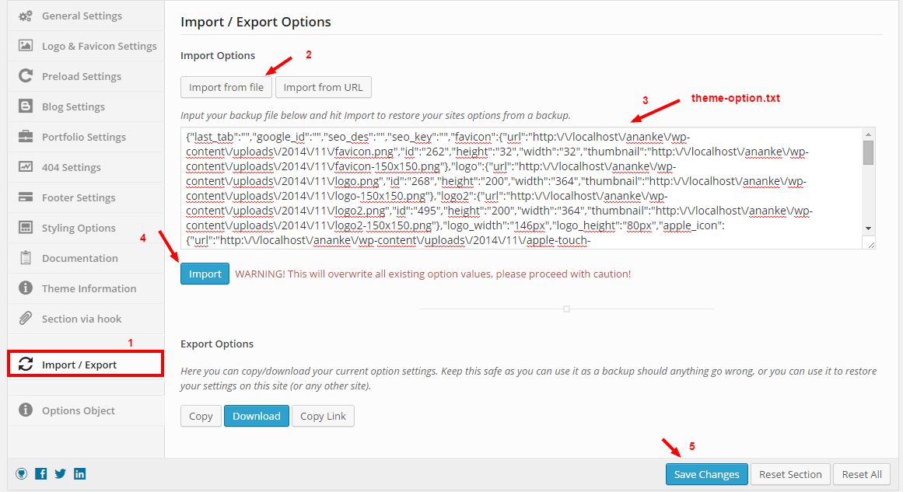

Welcome
In the following sections we will explain how to set up and use Ananke theme the easiest way possible. Although there're a lot of things written in this documentation, the theme itself is not hard to use. You can go to the Theme Options page and explore everything yourself. This file is more of a reference if you do not know what to do, or if you are not familiar with WordPress.
If you have any questions that are beyond the scope of this help file, please feel free to ask your questions at the oceanthemes2014@gmail.com.
Best regards
Resources
- Support Forum: oceanthemes2014@gmail.com
- Update Visual Composer with Latest version : Click Download Visual Composer latest version.
Theme Information
- Theme Name: Ananke WordPress Theme
- Author: Ocean Team
- Theme URL: http://demo.vegatheme.com/Anankemate/
Files Included
The download package (.zip) that you get from ThemeForest contains the following files and folder:
ananke.zip: main theme file that need to be uploaded to host to install Ananke themedemo-content.xml: demo content file, which contains all pages and posts from live preview website. It will help you to have a first look of how we use Ananke themedocs.html: theme documentation (this file)theme-options.txt: theme option backup file. You'll need this to restore the default theme options that setup for demo website.demo-slide.zip: Slider for homepage
Installation
Install Theme
After you download the .zip package from ThemeForest, unzip it. You'll see a file Ananke.zip, which is the main file that needed to upload and install.
Notice: If you download Installable WordPress file then that file is the zip file we use to upload and install.
You can either choose to upload and installl the theme using FTP or use WordPress theme install function.
Upload and install using FTP
- Unzip
ananke.zip, you'll get a folderAnanke - Use a FTP client like FileZilla and upload that folder to
wp-content/themesfolder on your host - Go to
Appearance > Themesand activate Ananke theme
Install theme using WordPress install function
- Go to
Appearance > Themesand click Add New - Select Upload
- Click Browse and select the
ananke.zipfile - Click Install Now
- When upload and installation progresses are completed, click Activate, or go to
Appearance > Themesand activate Ananke theme

Install plugins
After installing Ananke, you'll see a notification in the top of the page that says the theme needs some plugins to function properly.
Ananke theme requires follow plugins (all are free and available on WordPress.org):
Ananke is working perfectly with these plugins. It automatically adds more styles to them to make the design match the theme.
To install these plugins:
- Go to
Appearance > Install Plugins - You'll be redirect to a page where all needed plugins are listed. Just click on Install below each plugin's name
- After installing, if it's required to activate the plugin, just activate
Install demo content
If you are new to WordPress and have problems with setting up the theme you might want to import the demo content file that comes with the theme. The following actions will import some dummy posts and pages from the live preview:
- Go to
Tools > Import - Select WordPress from the list
- If you haven't installed the WordPress import plugin, a popup window will appears and ask you to install it. Just click Install Now. When the installation progress is completed, click Activate Plugin & Run Importer. If you have installed this plugin, skip to next step.
- Click Browse and select
demo-content.xmlfile from the download package - Click Upload file and import
- When you are asked to import author, you can create new author or import to existing author. You also should check the checkbox Download and import file attachments.

After completing all above steps, go to Posts, Pages... to see imported data.
Important: Due to license of images, we have to remove images in distributed demo content and replace them with placeholers. All images get from placehold.it, if you have any download errors when import demo-content.xml, problem can be speed of internet connection. Don't worry about that, you can replace with your own images.
Import slider
After setting up the page, you need to setup the slider for page like home to make it display the same as in live preview.
The download package contains exported slider (Revolution Slider) that help you easier to create sliders. Following the steps below:
(1): Go to Revolution Slider. (2): Click Import Slider button. (3): When a popup appear, click Browse and select demo-slide.zip file. (4): Click Import Slider button to start import the selected slider.

Setup homepage and blog page
After install demo content, you'll see a page Homepage. This page will be used as the homepage of the website. To set it as homepage, please go to Settings \ Reading, under Front page displays, please chose A static page (select below) and select Homepage for Front page and Blog page for Posts page.

Setup Menu
Although the theme is working now and it shows menu, but because we haven't created a menu for primary location, the theme will display all pages by default. As the number of pages is large, displaying all of them in the menu is a bad idea.
Create or edit a menu
Following these steps to create a menu:
- Go to
Appearance > Menus - Select an existing to edit, or click create a new menu. Note: when you import theme data, WordPress automatically create 2 menus for you: (Menu Home, Menu Pages), so select one of them if you want to have same menu as in live preview.
- Enter Url, Link Text from the left meta box and click Add to Menu
- On the right, feel free to drag and drop menu items to organize them
- When you're done moving menu items, check for Theme locations at the bottom of the page
- Click Save Menu

Setup widget areas
Ananke theme has 1 widget areas (sidebars) by default:
- Primary Sidebar: main website sidebar which will be displayed on all blog posts, archive pages, etc.
To setup a sidebar, select it from the right by clicking its title or the arrow down. Then drag and drop widgets from the left to the sidebar area.
That's all! Now you have the website up with all basic elements!
Theme Options
The Ananke theme comes with unique, creative and easy-to-use Theme Options page. You can change all theme options in one place!
All options have full description so you can know what you are doing. Just click and save!
Let's go through each section.
Import Theme Options

General Settings
Here are the explanations of some options that can help you understand and use them better:
Favicon and Logo Upload
Favicon (short for Favorite icon), also known as a shortcut icon, Web site icon, tab icon or bookmark icon, is a file containing one or more small icons, most commonly 16x16 pixels, associated with a particular Web site or Web page. Browsers that provide favicon support typically display a page's favicon in the browser's address bar (sometimes in the history as well) and next to the page's name in a list of bookmarks. Browsers that support a tabbed document interface typically show a page's favicon next to the page's title on the tab, and site-specific browsers use the favicon as a desktop icon.
This is how favicon appears:

Ananke lets you upload favicon or enter favicon URL in the input box:
- If you have a favicon uploaded, or you store the favicon somewhere out of the Media Library, you can just put the URL of the favicon into the input box, or
- If you want to upload favicon for your website, click the upload button (the green one near input box) and upload it to Media Library as a normal image, then click Select.
.ico, .png, .gif. Usually we should use .ico.When you're done, you can click Save Changes button to save your data.
Preload Settings
When you're done, you can click Save Changes button to save your data.
Blog Settings
Portfolio Setitngs
404 Setitngs
Footer Setitngs
Styling Setitngs
Visual Composer
Extending the functionality of "Visual Composer" plugin, the page builder function available in More allows you to create various of template variations for use in your site. It has the similar interface with WordPress Menus & Widgets admin page - This makes you feel comfortable with the user interface.
Add id section: Add overlay pattern and choose fullwidth section: Design options section:
Home Page
Blog Page
Other Pages
Can choose Default Template (with sidebar) or Full Width (no sidebar)